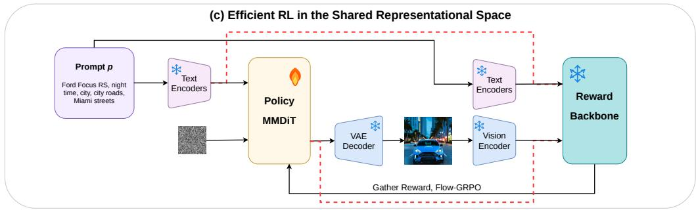
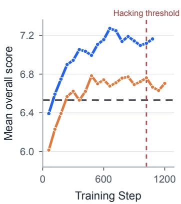

先说结论。生成式 DiT 是否学习到可转移视觉表征，是当前 VFM/representation autoencoder 线的重要问题。 检验生成模型内部 representation 能否迁移到生成质量/偏好建模，指出中后层特征和跨层聚合最有效。

Figureure 1 · : Model architecture, preference training, and reinforcement learning Figure 1: Model architecture, preference training, and reinforcement learning interface of DiT-Reward. (a) Given a prompt and image pair, the VAE maps the image into latent space, and a small amount of noise produces a nearly clean latent. A pretrained DiT or MMDiT jointly processes the text condition and image latent. Image token representations from selected layers are pooled, concatenated, and mapped to a scalar reward by a lightweight reward head. (b) For preferred and rejected images under the same prompt, DiT-Reward with shared parameters predicts two rewards and learns their ordering through the Bradley–Terry loss. (c) During reinforcement learning, a conventional pixel interface requires VAE decoding followed by visual encoding. When the policy and DiT-Reward share a latent space, the red path sends the generated latent directly to the reward model, avoiding additional decoding and encoding while reducing inference cost and peak memory.这张图概括 DiT-Reward 的整体方法流程。阅读时先看模块之间传递的训练信号，再看作者如何把目标拆成可优化的子问题。

(c) Gemini judge Figure 2: Internal and external evaluation during Flow-GRPO training(c) Gemini judge Figure 2: Internal and external evaluation during Flow-GRPO training. Panel (a) shows mean DiT-Reward on evaluation samples for the DiT-Reward-trained policy. Panels (b) and (c) compare overall scores from GPT-5 and Gemini-3-Flash for policies trained with DiT-Reward (blue) and HPSv3 (orange). Gray dashed lines denote base-policy scores of 7.29 and 6.53, respectively. Red dashed lines mark step 1020, used as a common reference because visible reward-hacking artifacts emerge at a similar stage in both RL runs.这张图来自论文 PDF 的结构化抽取。当前用于辅助理解 DiT-Reward 的方法或实验，请结合正文精读段落一起看。
核心问题
生成式 DiT 是否学习到可转移视觉表征，是当前 VFM/representation autoencoder 线的重要问题。